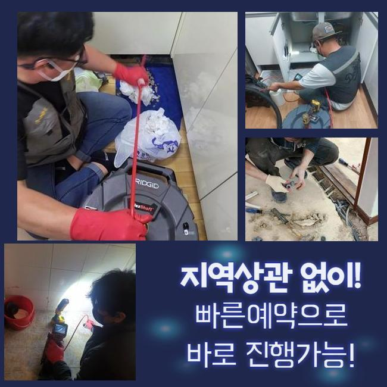
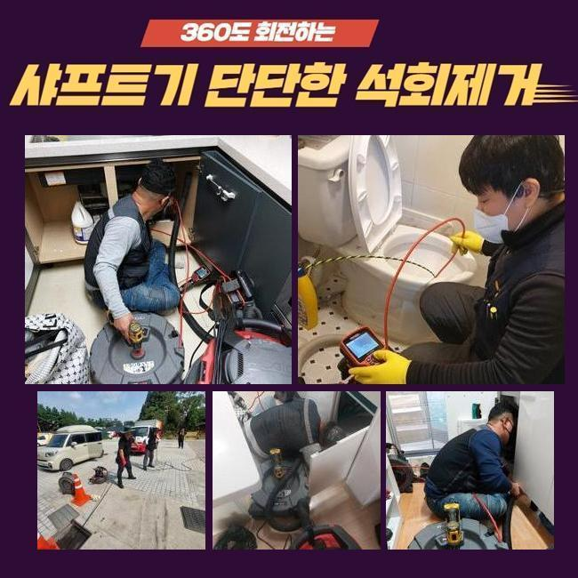
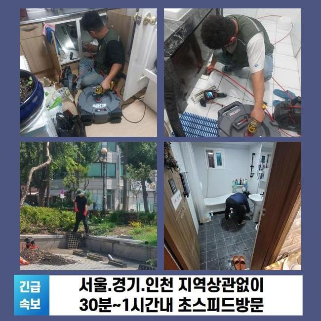
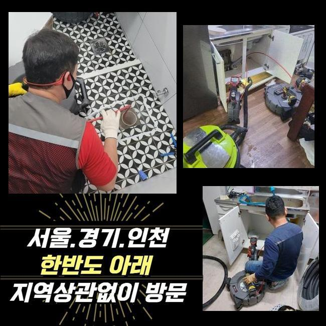
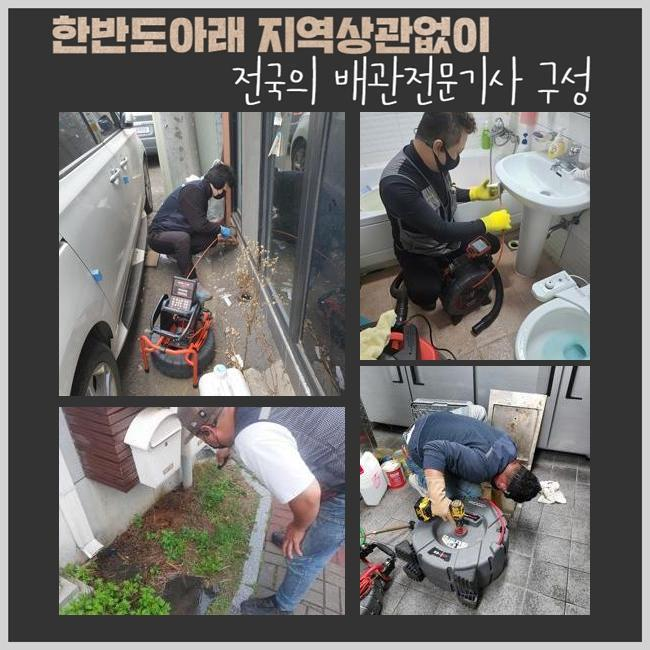
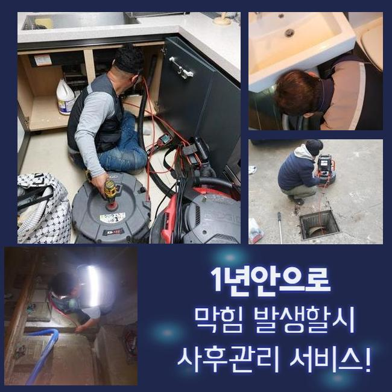

🏠 삼동변기뚫음 월암동 하수구청소 누수탐지공사
용인 변기막힘 전문 시공 후기

📋 작업 개요
- 위치: 용인
- 서비스 유형: 변기막힘, 하수구막힘, 배관막힘, 맨홀막힘, 누수수리, 뚫는업체, 배관청소, 고압세척, 설비공사, 악취차단
- 작업 일시: 2024. 11. 17. 11:44
- 업체명: 하수구수사대 (010-5615-2118)
🔍 문제 상황
삼동변기뚫음 월암동 하수구청소 누수탐지공사
아파트 하수관이 고장나면 실로 찾아오는 고통은 이루 세기가 어려운 정도에요
이렇다할 하자가 없던 하수구가 뜬금없이 고장나기도 하지만 내부 잔수가 범람하는 일까지 막힘과 함께 나타나기도 해요
이런 어려움이 나타나기 전 빠릿빠릿하게 하수관을 치워주는 팁도 있으니 공유해드린 조언을 들으셔서 고객님 댁의 시설물들도 셀프 테스트를 한 번 해보세요
물을 못쓰게 만드는 하수관 중단을 탈피할 수 있게 와달라는 상담 마치고 곧장 계신 곳으로 방문하였습니다!
단순한 막힘 같겠지만 고여있던 물이 울컥대며 나와서 복합적으로 뒤섞인 이물질들이 바닥에 올라오고 불쾌한 악취까지도 실내를 빼곡하게 채울 것입니다
쉬어야 할 공간이 더러워지니까 어찌할 바를 모르셨던 의뢰인분이 절박한 마음으로 고쳐달라는 연락을 하신거죠
막힘이 도래했을 때 고객님 선에서 노력하여 막힌 걸 없애려고 해보시는데요
오래되지 않은 신규 막힘이면 강한 물살을 퍼붓거나 소비자도 쉽게 쓸 수 있는 뚫어뻥이나 관통기를 쓰거나 연화 액체를 내려보내서 원활한 물의 흐름을 조성합니다
비지땀을 흘리면서 간신히 물이 나가도록 해도 대개는 재차 문제가 생겨서 속만 상하시곤 합니다
대응법을 잘 모르신다면 에너지를 비축해 두시고 대신 근처 기술력좋은 전문가를 선택해서 난관을 극복하시길 베스트라고 말씀 드리고 싶어요

🔎 원인 분석
💡 전문가 진단: 정밀 진단 장비를 사용하여 슬러지의 고착 여부를 판명하고 타격/세척 작업을 실시했습니다.
막힘이 일어난 곳을 살펴보니 물이 뿜어져나오는 모습도 계속해서 일어나는 중이었어요
더러운 물이 반대로 흐르면 바이러스가 유발한 냄새도 상당하고 벌레 및 세균이 침범할 수 있으니 재빨리 뚫어주고 정리해야 합니다
고객님께서 알려주신 바에 의하면 정기적으로 배관 점검을 진행했음에도 이런 문제점들이 계속 이어졌다고 합니다
같은 하수도를 공유하고 있는 여러 세대에 걸쳐 같은 막힘 증세를 호소하면 가지배관이 연결되는 메인배관 중에 어딘가 문제가 생겨버린 상황일 수도 있습니다
한 집을 해결한다고 하여 조만간 도로 막힐테니 본격적인 건물 설비에 대한 종합적인 검사가 이뤄져야 합니다
주기적인 정비 날짜를 설정해서 문제가 터지기 전에 하수관이 멀쩡한지 끊임없이 체크해야 합니다
물길이 턱하니 막혀버린 사안을 원만히 풀기 위해서 저희 내시경 기기를 현황 판단을 해보기로 했습니다
야외까지 나아가는 지점의 파이프 상의 문제라는 진리를 깨닫게 되어 많은 하수를 처리하는 메인관을 보려고 자리를 옮겼습니다
맨홀을 개방하자마자 대량의 오염물이 유출됐었고 입출구부터 흐름이 차단돼서 물이 빠져나가지 못했다는 진상을 이해하게 됐습니다
깊숙한 곳에서 막힘이 생기면 도달하는 것도 무리가 있으니 홀로 처리하려는 도전은 부정적인 결말이 예견됩니다
난이도가 어려운 상황일수록 애초에 전문업체에 의뢰하는 게 모두의 안녕을 위해서 바람직하다고 할 수 있겠죠

🔧 작업 과정
메인배관 경로 안의 찌꺼기들이 빠지게 만들려고 하수구 석션장비를 활성화하여 굵직굵직한 찌꺼기들 빨아당기는 작업을 해줬습니다
해당 업무를 거치면서 내부에 남겨져있는 불순물들을 효과적으로 빨아당깁니다
석션기계는 쉽게 말해 진공청소기랑 비슷한 기능을 하기 때문에 파워가 상당합니다
해당 기계의 운용으로 잔여감없이 정돈해야지 머지않은 미래에 또다시 하수기능을 잃어버리게 되는 사안들을 보지 않을 수 있어요
우선적으로 부유하는 오염원을 제거하고 새롭게 분석하고자 배관 카메라 기구를 투여해서
떡하니 차지하고 있던 찌꺼기가 사라진 점을 체크했으며 통로가 쾌적하게 트인 점 역시 감지할 수 있었네요
석션기기로 덩어리진 내용물은 없앴으나 여전히 남겨진 미미한 입자의 오염물을 흔적도 없이 없애버리려면 하수관의 고압세척 프로세스를 발동해야 합니다
이 공법은 심한 경우에 쓰는데 고압으로 뭉친 물을 쏘아대며 배관 속에 밀착되어있는 더러운 오물 분자들을 세정하여 맑게 만드는 일이에요
평범한 장소의 단순막힘에 사용하긴 힘이 너무 세지만 공동배관에 쓴다면 매우 효율적인 특화된 장비로 애용하고 있습니다
환경에 맞는 계획을 세우는데 이곳은 굵은 핵심 배관과 집과 연결되는 잔배관까지 많이 약화된 상태였기에 데미지가 있지 않도록 적절한 세기로 조절해가면서 청소 작업을 이끌어 나갔습니다
만족할 때까지 지속적으로 세정을 유지하여서 내측에 고인 입자들을 몸체로부터 분리시켰습니다
집중한 끝에 내시경으로 완료해도 될지 봤는데 티끌하나 없이 깔끔해진 관로의 현재 모습이 목격되어 끝내도 되겠다 싶었어요
손대는 영역을 이왕이면 소규모로 설정하는 게 편하실테니 여러가지 솔루션들을 접목하면서 작업을 해나가요
현장에 깔린 배관의 종류나 옵션에 따라서 해결 전략이 살짝씩 변화하는데 옳지 않은 방법으로 청소를 하면 배관에 무리가 갈 수 있어 전체 부품을 변경하면 수리비가 배로 다가옵니다
가능하다면 풍부한 수선 경험을 지닌 하수구 설비 업체를 택하는 안목이 필요합니다!
하수관 설비는 매우 복잡한 영역이며 나뭇가지가 퍼진 듯한 구조를 가지고 있는 곳이라서 숙련도가 뛰어나야 능숙하게 파악할 수 있어요
일부 배관의 구간만을 해결한다 하여 전체 배수관로의 성능이 원활해지기 쉽지 않고 문제가 다시 발생할 때도 많답니다


✅ 작업 완료
어설픈 업체가 공사를 하는 상황이면 주거지의 배관에 청소를 했는데도 몇 주 안에 또다시 막혀 다른 시공을 요청해야만 하는 또 다른 과제가 생기고 막대한 자원을 소모하게 됩니다
하수관이 완전 봉쇄되기 이전에 방해 요소를 제거하는 요강들이 존재하므로 이에 대해 안내해 드리겠습니다!
수기로 치우거나 배관용 세제로 청소하거나 모발을 걸러주는 필터를 이용하는 방식도 있습니다!
충분히 뜨거운 물을 받아서 붓고 하수구 필터를 설치하는 것도 좋은 방법이지만 이러한 보호 조치를 모두 공들여서 실천했음에도 하수관 고장이 존속되면 전문업체의 도움이 절실한 것입니다!
하수시설의 기능상 오류로 인해 현재 난감하다고 느끼신다면 걱정 없이 접수를 해주시면 이것저것 가리지않고 능수능란하게 문제를 처리해 드리겠습니다!




⚠️ 베란다 누수 및 방수 관리 방법
- ✅ 비가 많이 올 때 창틀 주변이나 아래층 천장에 얼룩이 생기는지 정기적으로 확인해 보세요.
- ✅ 우수관 주변 실리콘 마감이 들뜨거나 깨진 틈새가 있는지 손상 여부를 수시로 체크하세요.
- ✅ 베란다 바닥 타일의 줄눈(메지)이 소실되면 그 틈으로 물이 침투하여 누수가 유발됩니다.
- ✅ 누수 의심 증상 발견 시 방치하면 아래층 손실이 커지므로 즉시 전문가의 진단을 받으십시오.
💡 핵심 정리
- 확실한 장비 작업(내시경 점검 및 샤프트 스케일링)으로 원인을 뿌리 뽑습니다.
- 작업 후 1년 이내에 동일한 부위 재발 시 100% 무상 A/S 서비스를 보장합니다.
- 서울 · 경기 · 인천 전 지역에 24시간 언제든 긴급 출동할 수 있도록 항시 대기 중입니다.
❓ 자주 묻는 질문 (FAQ)
🚨 용인 변기막힘 문제로 고민이신가요?
정확한 원인 진단과 확실한 시공으로 재발 없는 해결을 약속드립니다.
24시간 긴급 출동 | 서울 · 경기 · 인천 전지역 | 1년 내 재발 시 무상 A/S